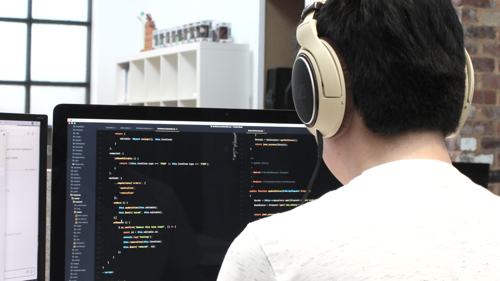

The past month has been a transformative period for me as a computer science student deeply passionate about frontend development and software engineering. Through consistent practice, engagement with real-world projects, and dedicated learning, I have made significant strides in my journey to becoming a skilled software engineer.
One of the major highlights of this period has been my involvement in the development of an online voting system for my university. This project has served as a comprehensive learning opportunity, exposing me to the entire software development lifecycle, from system analysis to implementation. I contributed to designing an intuitive and accessible user interface using HTML, CSS, and JavaScript, ensuring responsiveness across devices.
Additionally, I began creating an interactive website as part of my personal development. I created a simple calculator app.
Over the last month, I deepened my understanding of programming fundamentals, particularly in JavaScript, through solving practical challenges on platforms like FreeCodeCamp. I worked on improving concepts such as event handling, DOM manipulation, and object-oriented programming, which directly translate into better project outcomes.
An essential part of my growth has been familiarizing myself with industry-standard tools and workflows. I have extensively used GitHub for version control and collaboration during group projects. Tools like npm for managing dependencies and React for creating dynamic web applications have also become part of my toolkit.

Looking ahead, I am committed to building on this momentum by delving deeper into backend technologies, exploring cloud hosting platforms, and further refining my understanding of user experience design. I aim to contribute to larger open-source projects to broaden my perspective and engage with a global community of developers.
Effective client management is a cornerstone of successful web development projects. A client-centric approach emphasizes clear communication, professionalism, and adaptability throughout the project lifecycle.
Setting realistic expectations is key to avoid misunderstandings. Transparency about timelines, costs, and deliverables, along with consistent updates, fosters trust and collaboration. Providing regular feedback opportunities ensures that the project aligns with the client’s vision while maintaining clarity through documentation.
Post-project, developers should educate clients on managing their websites independently and seek feedback to refine their services. By prioritizing client satisfaction, developers can build long-term relationships and maintain professional reputations.